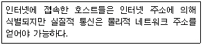
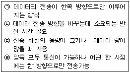

네트워크관리사-2급 (2006-04-23 기출문제)
1과목: TCP/IP
1. 다음 TCP/IP 계층 중 호스트 간의 메시지 단위의 정보 교환 및 관리를 주 기능으로 하는 계층은?
- 응용프로세스 계층
- TCP/UDP 계층
- 네트워크 접속 계층
- IP 계층
(정답률: 51%)

2. IPv4에서 IP Address에 대한 설명으로 옳지 않는 것은?
- Network ID 부분과 Host ID 부분으로 되어 있다.
- 인터넷상에서 컴퓨터를 찾기 위한 주소이다.
- 000.000.000.000 부터 255.255.255.255 까지 이다.
- 40 bit의 숫자 조합으로 표현된다.
(정답률: 88%)
3. 인터넷의 도메인(Domain) 중 최상위 도메인으로 옳지 않은 것은?
- NET
- ORG
- COM
- GO
(정답률: 69%)
4. 목적지 호스트의 IP Address가 동일 네트워크상에 있는지 확인하기 위해 사용하는 방법은?
- Network Name
- Subnet Mask
- Subnet Name
- Host ID
(정답률: 77%)
5. 정적 라우팅과 동적 라우팅에 관한 설명으로 옳지 않은 것은?
- 정적 라우터는 라우팅 테이블을 직접 작성하고 갱신해야 한다.
- 동적 라우팅 프로토콜은 라우터 사이에서 정기적으로 라우팅 정보를 교환한다.
- 정적 라우팅에서 라우팅 테이블은 RIP와 OSPF가 담당한다.
- 일반적으로 규모가 큰 네트워크에서는 동적 라우팅을 사용한다.
(정답률: 72%)
6. OSPF 프로토콜이 최단경로 탐색에 사용하는 기본 알고리즘은?
- Bellman-Ford 알고리즘
- Dijkstra 알고리즘
- 거리 벡터 라우팅 알고리즘
- Floyd-Warshall 알고리즘
(정답률: 45%)
7. OSI 7 Layer의 전송(Transport) 계층에 속하며, 사용자에게 신뢰할 수 있는 데이터 전송을 지원하는 인터넷 프로토콜은?
- IP
- TCP
- UDP
- RARP
(정답률: 79%)
8. IP Address가 B Class이고, 전체를 하나의 네트워크로 사용할 때 적절한 서브넷 마스크 값은?
- 255.0.0.0
- 255.255.0.0
- 255.255.255.0
- 255.255.255.255
(정답률: 91%)
9. 인터넷 그룹 관리 프로토콜로 사용자들로 하여금 멤버간의 관계를 유지할 수 있도록 하는 프로토콜은?
- ICMP
- IGMP
- EGP
- IGP
(정답률: 79%)
10. Telnet으로 할 수 있는 일반적인 작업으로 가장 옳지 않은 것은?
- 디렉터리 삭제가 가능하다.
- 디렉터리 생성이 가능하다.
- 파일을 다운로드 할 수 있다.
- 실행파일을 실행할 수 있다.
(정답률: 66%)
11. 사용자가 원격 호스트에 연결하여 이를 자신의 로컬 호스트처럼 사용할 수 있는 프로토콜로서 로컬 컴퓨터에서 전송된 명령어를 서버가 수행하여 결과를 다시 로컬 컴퓨터의 클라이언트에게 전송하는 인터넷 기술은?
- Telnet
- FTP
- SMTP
- SNMP
(정답률: 89%)
12. URL에 대한 설명 중 옳지 않은 것은?
- URL은 인터넷상의 정보 위치를 나타내기 위한 방법으로서 인터넷의 자원 및 서비스에 대해 사용되는 표준 명명 규칙이다.
- URL의 구성은 프로토콜, 호스트 명, 도메인 명, 디렉터리 이름, 파일 이름순으로 구성되며, protocol://host.domain /directory/file와 같은 형식으로 표현될 수 있다.
- URL은 지정된 컴퓨터를 식별하기 위해 사용되는 것으로서 전 세계적으로 유일한 이름을 가질 뿐만 아니라 하나의 도메인 이름은 오직 하나의 호스트와 대응한다.
- URL에 참여할 수 있는 프로토콜들로는 HTTP, FTP, Telnet 등을 이용할 수 있다.
(정답률: 74%)
13. FTP의 주된 기능에 대한 설명으로 가장 올바른 것은?
- 파일을 전송하기 위한 프로토콜이다.
- 파일을 수정하는 프로토콜이다.
- Anonymous FTP를 사용하면, 텍스트 문서만을 송수신할 수 있다.
- FTP는 익명으로 파일을 전송하는 프로토콜이다.
(정답률: 83%)
14. 아래 프로토콜 중에서 다음과 같은 일을 수행하는 프로토콜은?

- DHCP(Dynamic Host Configuration Protocol)
- IP(Internet Protocol)
- RIP(Routing Information Protocol)
- ARP(Address Resolution Protocol)
(정답률: 69%)
15. OSI 7 Layer 중 제 3계층의 Protocol에 해당되지 않는 것은?
- ARP
- ICMP
- SNMP
- IGMP
(정답률: 63%)
16. 인터넷을 경유하여 로컬 네트워크에 접근할 때, 보안을 강화하기 위해 사용하는 프로토콜은?
- PPP
- PPTP
- HDLC
- CSLIP
(정답률: 50%)
17. 라우팅 프로토콜 중 홉(Hop)의 수에 제한을 받는 것은?
- SNMP
- RIP
- SMB
- OSPF
(정답률: 84%)
2과목: 네트워크 일반
18. 반이중(Half-Duplex) 통신방식에 대한 설명으로 가장 올바른 것은?

- (ㄱ), (ㄴ)
- (ㄱ), (ㄹ)
- (ㄴ), (ㄷ)
- (ㄴ), (ㄹ)
(정답률: 60%)
19. 송신측에서 데이터를 전송할 때 길이가 긴 데이터 비트를 5~8비트로 전송하는 방식으로, 짧은 시간동안 몇 비트 분량만을 연속적으로 전송하고 일정한 유휴 시간(Idle Time)을 두는 과정을 반복하는 전송방식은?
- 회선 교환방식
- 패킷 교환방식
- 동기식 방식
- 비동기식 방식
(정답률: 36%)
20. 다음 중 동적인 불완전성의 원인이 아닌 것은?
- 백색 잡음 : 잡음 세력이 시간에 전혀 무작위한 진폭을 가짐
- 하모닉 왜곡 : 신호의 감쇄가 신호의 진폭에 따라 달라지는 것을 말함
- 에코우 : 전송선에서 임피던스의 변화가 있으면 약해진 신호가 송신측으로 되돌아옴
- 충격성 잡음 : 전송시스템에 순간적으로 일어나는 높은 진폭의 잡음으로 주로 기계적인 충격에 의해 발생
(정답률: 47%)
21. 다음 중 회선교환 통신망이 갖는 특징은?
- 데이터가 전송되지 않는 동안에도 링크가 연결되어 있어 효율적이다.
- 링크 설립을 위해서 긴 시간이 소요되므로 짧은 데이터전송에는 비효율적이다.
- 일단 연결되더라도 지연이 생겨 데이터를 전송한다.
- 비실시간 서비스를 요구하는 정보의 전송에 사용된다.
(정답률: 43%)
22. OSI 7 Layer에서 트랜스포트 계층이 하는 기능은?
- 경로배정 기능
- 암호화 복호화 기능
- 멀티 플렉싱 기능
- 호스트 간 흐름제어와 에러제어 기능
(정답률: 54%)
23. 인터넷 프로토콜들 중에서 OSI 계층 구조상의 네트워크 계층에 속하지 않는 프로토콜은?
- IP
- ICMP
- UDP
- ARP
(정답률: 76%)
24. Token Ring에 대한 설명 중 올바른 것은?
- EC에서 개발하였다.
- IEEE 802.3 표준안이다.
- 충돌이 일어나지 않는다.
- CSMA/CD 방식을 사용하였다.
(정답률: 55%)
25. Bus 토폴로지(Topology)에 대한 설명 중 올바른 것은?
- 확장이 매우 어렵다.
- 각 스테이션이 중앙 스위치에 연결된다.
- 터미네이터(Terminator)가 시그널의 반사를 방지하기 위하여 사용된다.
- 중앙 집중형이다.
(정답률: 77%)
26. 다음 중 고속 Ethernet의 액세스 방식에 해당되는 것은?
- ALOHA
- CSMA/CD
- Token Bus
- Token Ring
(정답률: 83%)
27. 광섬유(Fiber Optics) 케이블의 이점으로 옳지 않은 것은?
- 대역폭이 넓다.
- 잡음에 강하다.
- 설치 및 유지보수가 쉽다.
- 도청 및 보안에 강하다.
(정답률: 72%)
3과목: NOS
28. Windows 2000 Server에서 다른 컴퓨터의 드라이브를 마치 로컬 컴퓨터의 드라이브처럼 사용, 관리할 수 있는 것은?
- 로컬 드라이브
- 네트워크 드라이브
- 공유 드라이브
- 리소스 드라이브
(정답률: 49%)
29. 파일, 디렉터리의 사용허가와 보안 기능을 갖는 Windows 2000 Server의 파일 포맷 형식은?
- NTFS
- FAT
- FAT32
- UFS
(정답률: 75%)
30. Windows 2000 Server에서 IIS 하위 구성요소에 포함 되는 것은?
- SMTP 서비스
- TELNET 서비스
- SNMP 서비스
- ARCHIE 서비스
(정답률: 45%)
31. Windows 2000 Server의 파일 서버에 관한 설명으로 옳지 않는 것은?
- 네트워크를 통해 파일을 액세스 할 수 있도록 만드는 방법은 해당 디렉터리를 공유하는 것이다.
- 공유된 디렉터리의 공유 이름으로 네트워크상의 다른 사용자가 공유 리소스를 이용할 수 있게 된다.
- 공유 디렉터리가 NTFS 볼륨에 있는 경우 일부 디렉터리에 대한 액세스를 막기 위해 디렉터리 사용 권한을 사용할 수 있다.
- 디렉터리를 공유할 때 공유 이름은 반드시 해당 디렉터리 이름을 사용해야 한다.
(정답률: 78%)
32. 다음 중 DHCP 서버를 이용해서 클라이언트의 TCP/IP 설정을 자동화 할 때 설정 가능한 사항으로 옳지 않는 것은?
- 라우터 주소
- WINS 서버 주소
- NetBIOS Name
- DNS 주소
(정답률: 45%)
33. Windows 2000 Server에서 DHCP 클라이언트가 DHCP 서버로부터 IP를 임대 받는 과정 중 처음으로 초기화할 때 클라이언트가 서버에 대하여 패킷을 브로드캐스트 하는 단계는?
- IP 대여 요청단계
- IP 대여 제안단계
- IP 대여 선택단계
- IP 대여 응답단계
(정답률: 69%)
34. Active Directory의 기본 단위이며 서로 구별이 가능하고 특정한 이름이 부여된 속성 집합으로 사용자, 프린터 또는 응용 프로그램과 같은 구체적인 대상을 가리키는 것은?
- 개체(Object)
- 도메인(Domain)
- 조직단위(OU)
- 트리(Trees)
(정답률: 62%)
35. Windows 제품군 중 Active Directory 서비스가 제공되지 않는 것은?
- Windows 98
- Windows 2000 Server
- Windows 2000 Advanced Server
- Windows 2000 Data Center Server
(정답률: 77%)
36. Windows 2000 Server 설치 시, 기본으로 설치되는 사용자로 알맞게 짝지어진 것은?
- User, Administrator
- User, Guest
- User, Group
- Administrator, Guest
(정답률: 75%)
37. 네트워크상에서 자유롭게 메일을 주고받을 수 있으며, 그룹과 전체 기업 간의 정보 공유가 가능한 Back Office 제품은?
- Exchange Server
- Samba Server
- SQL Server
- NNTP Server
(정답률: 45%)
38. DNS 서버에서 해당 도메인의 하위메뉴에 대한 설명이다. 옳지 않은 것은?
- 새 메일 교환기를 추가하면 해당 도메인으로 전자 메일을 받을 수 있다.
- [메일 교환기] 탭의 메일 서버 우선순위는 높은 번호가 우선적으로 제공된다.
- 메일 서버 우선 순위의 기본 값은 “10” 이다.
- 메일 서버가 웹 서버와 호스트가 다를 경우에는 먼저 호스트를 추가한 후 메일 서버에 추가된 호스트의 이름을 입력한다.
(정답률: 44%)
39. Windows 2000 Server에서 NTFS 파일 시스템에 대한 설명으로 옳지 않은 것은?
- FAT, HPFS 파일 시스템보다 더 큰 파일과 파티션 사이즈를 지원한다.
- 파일과 디렉터리 단위의 보안을 설정할 수 있다.
- 파일과 디렉터리의 압축을 지원하고 POSIX 요구 사항을 해결한다.
- NTFS 파일 시스템은 FAT 또는 FAT32로 변환 할 수 있다.
(정답률: 60%)
40. RDP(Remote Desktop Protocol)에 대한 설명으로 옳지 않은 것은?
- Windows 2000 Server의 터미널 서비스에 사용되는 프로토콜이다.
- 네트워크 연결을 통한 원격화면 표시 및 입력 기능을 제공한다.
- RDP를 이용한 터미널 서비스는 LAN(Local Area Network)상에서만 연결을 지원한다.
- 최근 TSAC(Terminal Service Advanced Client)가 RDP 클라이언트를 대신하여 사용된다.
(정답률: 67%)
41. 터미널 서버의 관리 툴인 "터미널 서비스 구성" 메뉴에서 할 수 있는 일로 옳지 않은 것은?
- 암호화 수준을 제어한다.
- 세션을 설정해서 연결이 끊긴 사용자가 서버의 부하를 일으키는 일을 방지한다.
- 원격제어를 통해 사용자의 컴퓨터로 대신 작업하는 일을 할 것인지를 선택한다.
- 연결된 사용자를 확인하고 사용자에게 메시지를 보낸다.
(정답률: 37%)
42. 인터넷의 잘 알려진 포트(Well-Known Port) 번호로 옳지 않은 것은?
- HTTP - 80번
- FTP - 21번
- Telnet - 24번
- SMTP - 25번
(정답률: 86%)
43. Linux에서 사용할 수 있는 압축 또는 묶기 유틸리티로 옳지 않은 것은?
- compress
- tar
- gzip
- winzip
(정답률: 61%)
44. Linux 시스템에서 기존에 설정된 crontab을 삭제하려고 할 때 올바른 명령어는?
- crontab -u
- crontab -e
- crontab -l
- crontab -r
(정답률: 69%)
45. Linux 시스템에서 사용자 암호 정보를 가지는 디렉터리는?
- /etc
- /sbin
- /home
- /lib
(정답률: 58%)
4과목: 네트워크 운용기기
46. 전력선을 매체로 전력선의 전원파형에 디지털 정보를 실어서 전송하는 통신방식은?
- PLC
- Bluetooth
- WAP
- WIPI
(정답률: 69%)
47. 전송 매체의 특성 중 Fiber Optics에 해당하는 것은?
- 여러 라인의 묶음으로 사용하면 간섭 현상을 줄일 수 있다.
- 신호 손실이 적고, 전자기적 간섭이 없다.
- 송수신에 사용되는 구리 핀은 8개 중 4개만 사용한다.
- 수 Km이상 전송 시 Repeater를 사용해야 한다.
(정답률: 68%)
48. 라우터의 이더넷 IP Address가 196.253.177.1/24 이며, 시리얼 IP Address는 220.163.177.2/30 이다. 이때, 이 라우터의 내부 LAN에 연결된 PC의 IP Address와 Gateway로 가능한 Address는?
- IP Address : 196.253.176.7, Gateway: 196.253.177.1
- IP Address : 196.253.177.111, Gateway: 220.163.177.2
- IP Address : 196.253.177.10, Gateway: 196.253.177.1
- IP Address : 196.253.177.7, Gateway: 220.163.177.2
(정답률: 51%)
49. 미러링(Mirroring)이라고 하며, 최고의 성능과 고장대비 능력을 발휘하는 것은?
- RAID 0
- RAID 1
- RAID 3
- RAID 5
(정답률: 74%)
50. 라우터에 대한 설명 중 옳지 않은 것은?
- 네트워크상의 패킷을 전달하는 네트워크 디바이스이다.
- OSI 7 Layer 중 Transport 층에 대응된다.
- 하드웨어에 따라 패킷을 다시 적절한 크기로 분할하거나, 또는 재조립하고, 이들을 데이터 프레임의 형태로 캡슐화 하는 기능을 가지고 있다.
- 패킷 전달을 위해 최적의 경로를 결정한다.
(정답률: 68%)